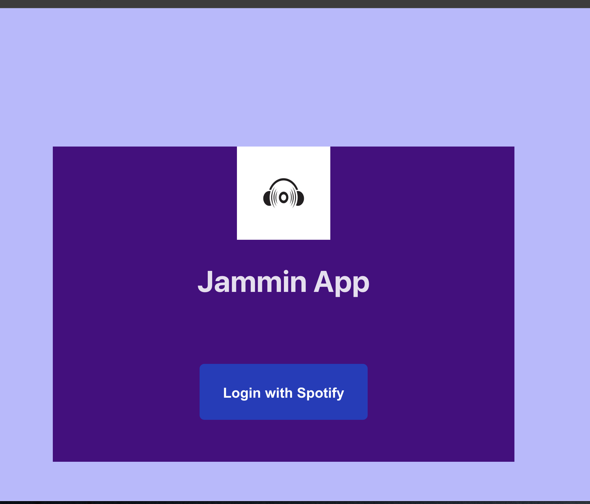
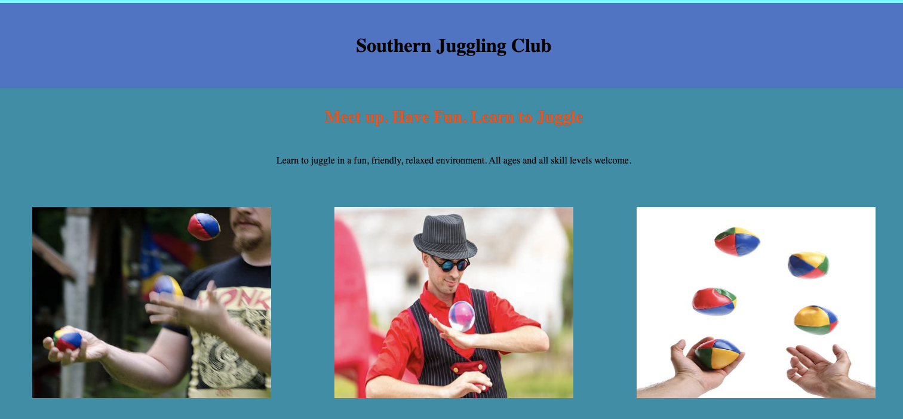
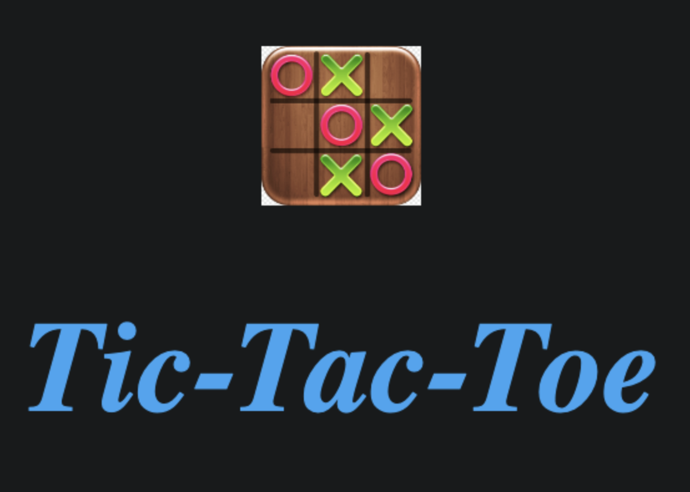

About Me
Hi, I'm Margaret. I have a background in Science and am pivoting to a career in Software Development. I have spent the last 8 years of my career refining my analytical, technical, problem solving and leadership skills in the BioPharmaceutical and Medical Device Industry.
Throughout my career to date I have gained valuable experience in laboratory analytical techniques, data analysis, technical writing, data trending and review, problem solving and project and time management.
In addition, as a team lead, I developed skills in leadership, communication, adaptability and decision making, continuous improvement and implementation. Collaborating with a variety of intra-functional and cross-functional, internal and external stakeholders further improved these skills to ensure deliverables were realistic, achievable and that deadlines were met.
While I enjoyed working in the scientific industry, I am ready to explore other career opportunities and develop the Software Development skills I have learned.
Recent Technical Skills
Recently I have been working with:
CSS, HTML, JavaScript, TypeScript, ReactJS, AngularJS, SQL
Some Projects I've Built
Jammin App
A simple music app created using ReactJS that allows users to search for songs and create and save custom playlists in their Spotify account via the Spotify API using their Spotify login credentials.
Juggling Club Website
A responsive website created for a juggling club. The site uses a number of responsive layout approaches including flexbox, media queries, responsive units
Tic Tac Toe
A simple two player Tic-Tac-Toe (X's and O's) game created using CSS, HTML, Javascript and ReactJS.
Get in Touch
I'm open to new opportunities! If you like what you've seen please do get in touch.